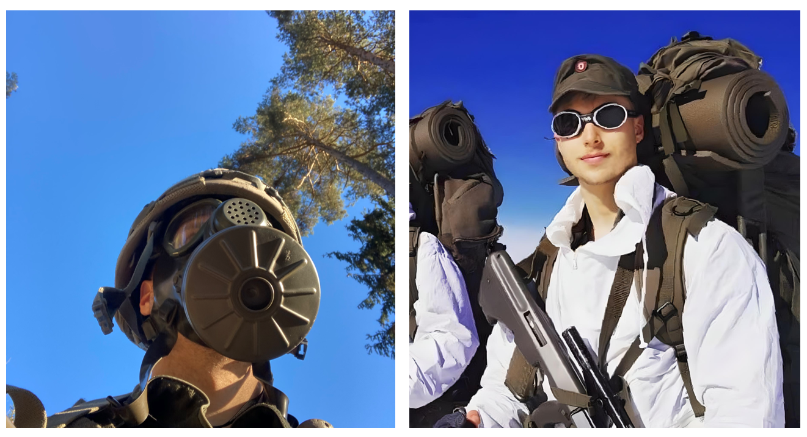
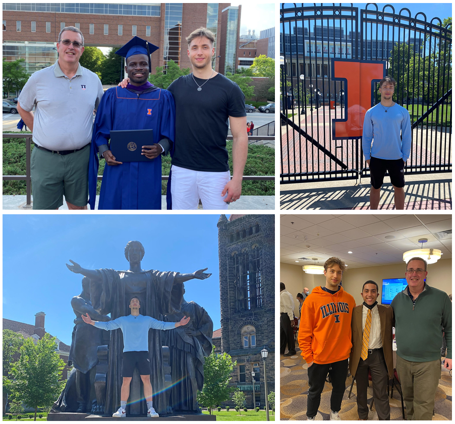

Hello world! My name is Markus Köfler, I am currently 21 years of age and based in Austria. I am a student enrolled in the Master's degree program Data Science
at the Vienna University of Technology. With a Bachelor's degree in International Business & Economics, it might not be 100%
clear, why I am trying to pivot towards a more technical domain.
Hello world! My name is Markus Köfler, I am currently 21 years of age and based in Austria. I am a student enrolled in the Master's degree program Data Science
at the Vienna University of Technology. With a Bachelor's degree in International Business & Economics, it might not be 100%
clear, why I am trying to pivot towards a more technical domain.
The story about my educational background begins with the completion of the Matura, which is equivalent to a high school diploma required
to be admitted to study at any institution of higher education. Like many of my friends, I had no clear path I wanted to pursue. The only thing I knew
at that time was my genuine interest in business, economics and everything that had to do with money and investing.
Learn more about my ongoing journey by scrolling down...

As one of 50 students being admitted to the Bachelor's degree progam International Business & Economics at the University of Klagenfurt, I was
determined to excel as a student, to either become entrepreneurially active or join a company and work myself up the hierarchy to the top-management
echelon. Just before the summer ended, I received the recruiting letter from the Austrian military. Every male Austrian who is eligible
is required by law to serve in the military for 6 months. There is an option to put the education on pause, however due to the current pandemic
most courses were offered online, and I gave studying a try. Despite the weekly schedule of sometimes more than 75 hours per week, I managed to
catch up with the learning material on the weekends. In April 2021, I was discharged from the military service and finally able to devote my full
capacities towards my degree. Surprisingly enough, I was granted the merit scholarship for completing 60 ECTS with a grade average of below 1.3.

Studying in the states has been a dream since having been to the US within the scope of a student exchange
initiative during 6th grade in high school. I was making use of the opportunity provided by the University of Klagenfurt
and applied for the Joint-Study Scholarship. The prestigious University of Illinois at Urbana-Champaign (UIUC) was my destination of choice.
Having been aware of that IT skills are highly valued in today's economy, the majority of courses
I registered for stemmed from the computer science/informatics department. Little did I know about UIUC earning lots of credits
for its top-notch computer science program, which ranks 5th place just behind MIT, Stanford, Berkeley and Carnegie Mellon University
(even better than Harvard!-
click here for reference).
Popular people associated with CS at UIUC are Chris Lattner and Stephen Wolfram (faculty), as well as Steve Chen, Jawed Karim (co-founders of YouTube),
Max Levchin (co-founder of PayPal), Brendan Eich (creator of JavaScript and co-founder of Mozilla Firefox) and Martin Eberhard (co-founder of Tesla)
(sources: edurank.org and wikipedia.org).
Slowly grasping how complex todays devices are, one question popped up in my mind, bothering me for quite a while: What geniuses figured out such systems that enable us to be
so much more productive? With that, I realized how big of a role computers will play in the future, sparking my motivation to learn the
skills necessary to effectively operate these machines. The first few weeks, I went through a quite fast-paced
Python programming bootcamp, followed by a practical introduction to data science. At this stage the popular statement "Data will be the
new gold of the 21st century" began to make sense to me - data is literally everywhere! It is amazing how information can be extracted from
sequences of 0 and 1 to solve real-world challenges like enhancing a business profitability, increasing delivery efficiency, preventing crimes
from happening, curing deseases and many more. On the flip side, data can also be abused for practices harming humanity like spreading
misinformation, privacy violations, online fraud, social engineering or discrimmination through biased models, just to name a few.
Since then, it has become my goal to tap into the field of data science, whether that be a position at a large corporate or as a
researcher - the key thing that matters is to drive a positive impact in this world through the use of data.
Returning back to Austria, I took initiative during the summer holiday to learn data analytics by completing the
Google Data Analytics Certificate on Coursera. As I resumed my studies at the University of Klagenfurt, my professor
hired me to hold weekly tutorials in econometrics and programming with the R language for the winter term, despite not having completed
the subject yet myself. For this reason, I really immersed myself in the subject, practiced and rehearsed until I was
able to explain the topics to fellow colleagues. Thereby I gained a solid understanding of linear regression and the statistical
concepts involved with this fundamental supervised machine learning technique. Out of pure interest, I signed up for classes in
Python programming and AI & ML, whereby the latter taught the most important ML algorithms as well as search algorithms and heuristic constraint
satisfaction problems.
At the beginning of the summer term, I put the emphasize on my Bachelor's thesis. My professor - and later thesis supervisor -
suggested to me to work on collecting economic time-series data for an ongoing research project. Anything that is data related would draw
my attention, so it is obvious that I accepted this offer. Gathering the data while thoroughly documenting the process and conduction
research for writing down the theoretical aspects for my thesis was definitely the most time-intensive project I have ever been involved in.
Today, I am looking back at 300+ hours of dealing with working with data, 90+ hours of writing code for algorithms, data manipulation, API retrieval
and visualizations, and 318 hours of writing my actual thesis (yes, I kept record of the hours I spent in an Excel sheet). Nevertheless, I am glad about
having done this project because it taught me to handle, store and document data appropriately which is also referred to as data integrity.
Other relevant courses to address are Data Analytics (machine learning algorithms and important principles when working with data) and macroeconomics. With my
knowledge and skills at that time, I tried to help out my student colleagues by publishing cleaned data sets with code solutions in both Python or R on my
GitHub page and answering their questions regarding code and analytical interpretation.
My Bachelor's thesis undoubtetly imposed a great challenge on me, still, I tried my best to make use of the free education here in Austria and
signed up for a specialized course in deep learning. I got familiarized with the main models used for computer vision, natural language processing and
generative outputs, and eventually conducted a final project where I attempted to classify skin cancer types from 10GB of skin lesion images.
In the next (and perhaps last) chapter of my educational journey I am pursuing is a Master's degree in Data Science
at the Vienna University of Technology. I am super keen on finally being able to focus on the discipline I am passioned about,
though, I am a bit nervous about the work load and complexity that comes along with the math, statistics and computer science topics
that will be taught. Anyhow, I will update this page on a regular basis - so stay tuned!